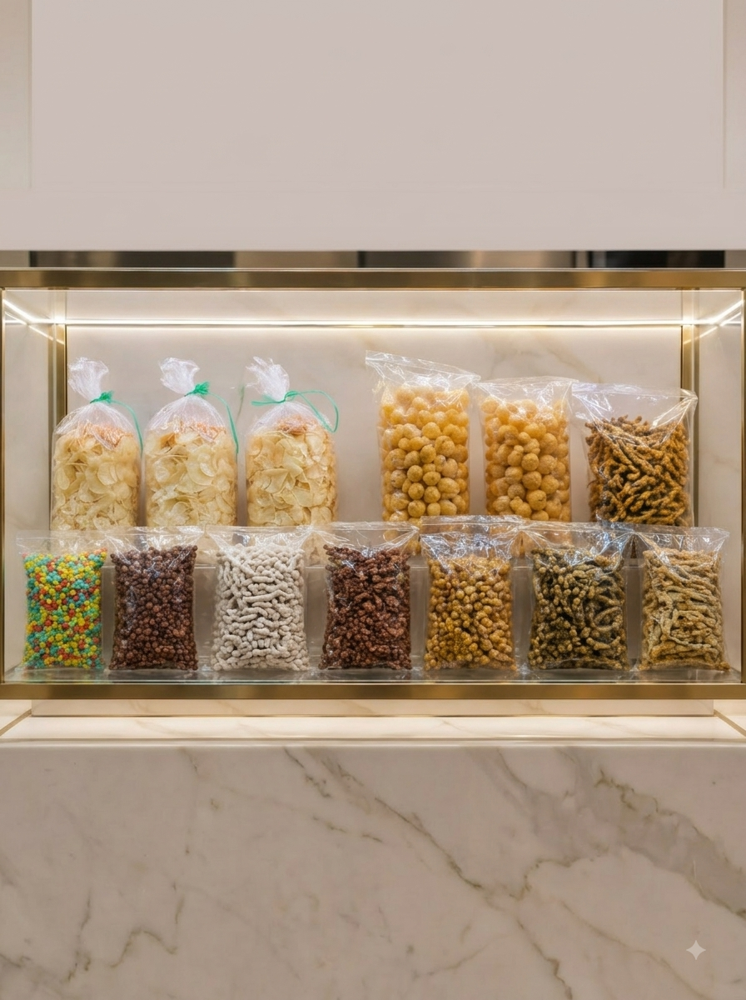

Discover the story, values, and journey behind Matahari Jaya.

Matahari Jaya is a food company committed to providing quality Indonesian food products while maintaining consistency, care, and customer satisfaction.
Our journey involves every step of the process, from product preparation and packaging to storage and distribution.
We continue to grow by improving our products, strengthening our processes, and building trusted relationships with customers and business partners.
Every process plays an important role in delivering quality products to our customers.
Preparing our products with attention to quality and consistency.
Products are carefully packaged before they are ready for distribution.
Maintaining product availability through organized stock management.
Delivering products to customers and business partners.
Maintaining the quality of our products through careful processes.
Paying attention to food safety throughout our activities.
Building long-term relationships with customers and partners.
Continuously growing and reaching a wider market.
We aim to continue developing quality Indonesian food products and expand our reach while maintaining trust, consistency, and customer satisfaction.